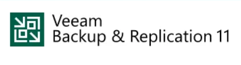

TP BTS SIO
Retrouvez ici tous mes travaux pratiques réalisés pendant le BTS SIO SISR, classés selon les trois blocs de compétences du référentiel.
BLOC 1 — ADMINISTRATION SYSTÈME

Procédure pour créer une machine virtuelle
Création d'une machine virtuelle à l'aide de VMware. voir le PDF

Linux
Ligne de commande shell pour gérer les utilisateurs. voir le PDF
Droits Linux Voir le PDF
Installation d'un serveur Ubuntu voir le PDF

GLPI
Déploiement et configuration de GLPI voir le PDF
Ajout d'un utilisateur voir le PDF
Création d'un ticket voir le PDF
Gabarit de ticket voir le PDF
Faire un contrat voir le PDF

OCS Inventory
Installation d'un agent OCS Inventory Windows/Linux voir le PDF

RAID
Le RAID (Redundant Array of Independent Disks) est une technologie qui permet de combiner plusieurs disques durs en un seul volume logique pour améliorer la performance et la fiabilité.
Création sur Windows voir le PDF
Création sur Linux voir le PDF

Active Directory
Un Active Directory est un service d'annuaire Windows qui permet de gérer les identités et les ressources d'un réseau local.
Création d'une Unité d'Organisation (OU) voir le PDF
Création d'un user voir le PDF
Création d'un dossier partagé et GPO lecteur réseaux voir le PDF
Création GPO d'interdiction d'accès au panneau de configuration voir le PDF
Créer des groupes de sécurité voir le PDF
Création d'un utilisateur itinérant voir le PDF
Création d'un utilisateur obligatoire voir le PDF
Création d'une politique de mot de passe voir le PDF
Mise en place d'un DNS voir le PDF
Mise en place d'un serveur DHCP voir le PDF

Samba
Samba est un logiciel libre qui permet de partager des fichiers et des imprimantes entre machines sous Linux et Windows.
Mise en place de Samba voir le PDF
BLOC 2 — ADMINISTRATION RÉSEAUX
Zabbix
Zabbix est une plateforme de supervision open source pour la surveillance des réseaux et des applications. Elle permet de collecter des données en temps réel, de générer des alertes et de visualiser les performances des systèmes.
Installation et configuration de Zabbix. Ajout d'agent Linux/Windows voir le PDF
Linux
Configuration d'IP statique sur une machine Debian voir le PDF
Script Bash sur un environnement Linux
Un script Bash est un fichier texte contenant une série de commandes à exécuter par l'interpréteur de commandes Bash. Il permet d'automatiser des tâches répétitives et de simplifier la gestion du système.
Script d'automatisation des sauvegardes voir le PDF
Script pour surveiller un service et alerter en cas de panne voir le PDF
Active Directory (Windows Server)
Création en masse de comptes utilisateurs Active Directory voir le PDF
Sauvegarde centralisée avec UrBackup voir le PDF

Cloud
Bâtir son propre Cloud voir le PDF
Firewall
Un firewall est un dispositif de sécurité réseau qui surveille et contrôle le trafic réseau entrant et sortant en fonction de règles de sécurité prédéfinies.
Mise en place d'un proxy filtrant transparent avec Squid sur une machine Linux voir le PDF
Cisco Packet Tracer
Cisco Packet Tracer est un simulateur de réseau développé par Cisco Systems. Il permet aux utilisateurs de concevoir, configurer et simuler des réseaux informatiques virtuels.
Centralisation des logs avec Syslog et synchronisation du temps avec NTP voir le PDF
Contrôle d'accès centralisé avec un serveur RADIUS (AAA) voir le PDF
Découverte et configuration de base d'IPv6 voir le PDF
Le routage statique IPv6 voir le PDF
Adressage automatique IPv6 avec SLAAC et DHCPv6 voir le PDF
Configuration Etherchannel sur un switch Voir le PDF
Etherchannel (LACP PAgP) Voir le PDF
IP DHCP Snooping Voir le PDF
IPv6 SLAAC Voir le PDF
IPv6 Stateful Voir le PDF
IPv6 Stateless Voir le PDF
Routage dynamique avec le protocole RIP (Routing Information Protocol) Voir le PDF
Routage dynamique avec le protocole OSPF Voir le PDF
Squid Voir le PDF
BLOC 3 — CYBERSÉCURITÉ

Stéganographie
La stéganographie est une technique qui consiste à cacher des messages dans un fichier (photo, audio).

Intrusion dans un système Windows
La méthode utilisée a été d'essayer de contourner les mots de passe Windows en utilisant une vulnérabilité, afin de pouvoir se connecter sans même connaître le mot de passe.

Cookies
Les cookies sont de petits fichiers stockés sur l'ordinateur de l'utilisateur par le navigateur web. Ils sont utilisés pour mémoriser des informations sur l'utilisateur, comme ses préférences ou son état de connexion.

Git
Git est un système de contrôle de version distribué, utilisé pour suivre les modifications dans le code source pendant le développement logiciel.
Proxy
Un proxy est un serveur qui agit comme intermédiaire entre un client et un serveur distant. Il peut être utilisé pour filtrer le trafic réseau, améliorer la sécurité ou masquer l'identité de l'utilisateur. En cours on a vu la mise en place d'un proxy OPNsense.

Veeam
Veeam est un logiciel de sauvegarde et de récupération de données utilisé dans les environnements informatiques pour protéger les systèmes d'information.